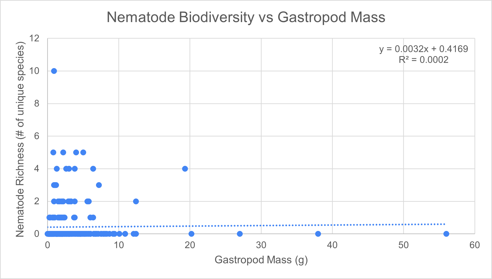

Based on the data, our results are inconclusive. There is no significant relationship between the mass of the slug and the number of nematode species. This is corroborated by an R^2 value of 0.0002, which is a marker for the strength of correlation between 2 variables, where a value of 0 indicates no correlation observed at all. Furthermore, the slug that supported the greatest nematode diversity weighed 0.9 grams at 10 unique species. On the other hand, the largest slugs in terms of mass were 56 grams and 38 grams, both of which hosted 0 unique species.